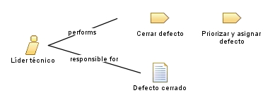

| Role: Líder técnico |
 |
|
Relationships
 |
||
| Primary Performs | ||
|---|---|---|
| Modifies |
|
|
| Process Usage | ||
Main Description
El Líder técnico es el responsable de las decisiones del proceso. Es dueño del estado del defecto a lo largo de todo el ciclo y garantiza que ningún defecto quede sin atender o se cierre sin verificación. Responsabilidades
|
Staffing
| Skills | conocimiento general del producto, criterio para priorizar y capacidad de coordinar al equipo. |
|---|